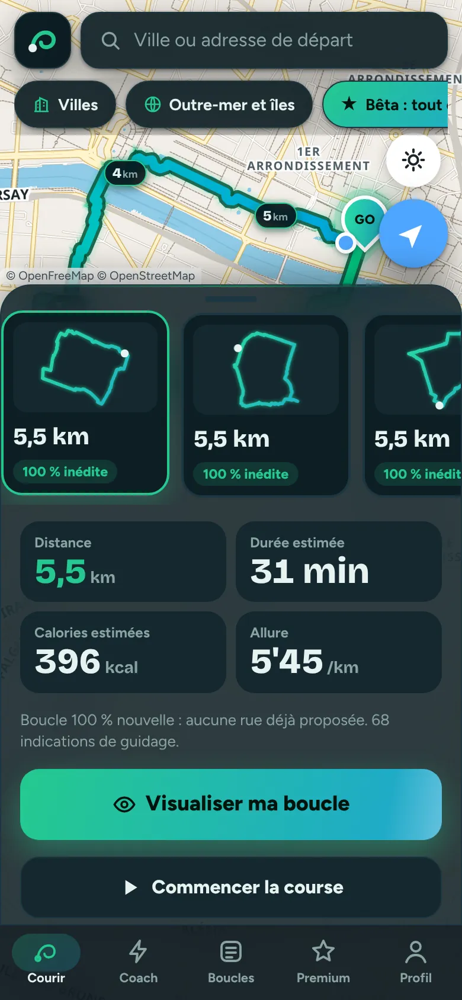
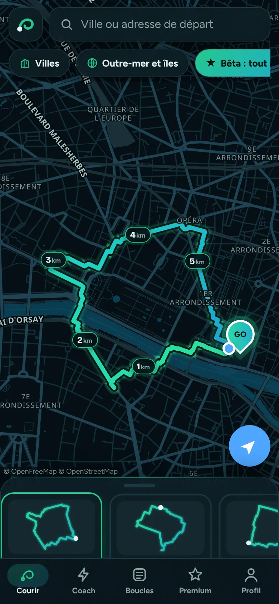
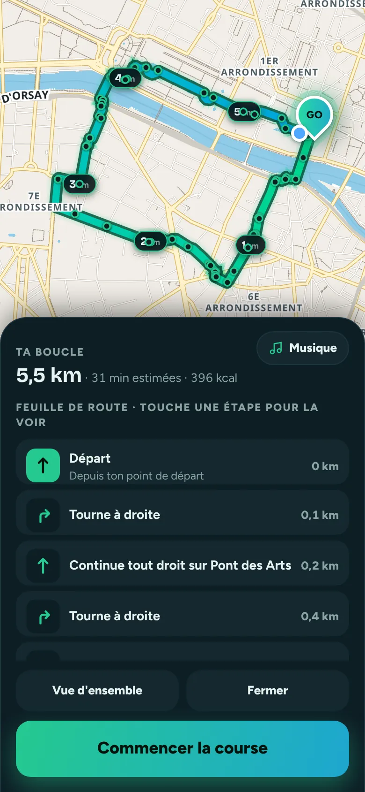
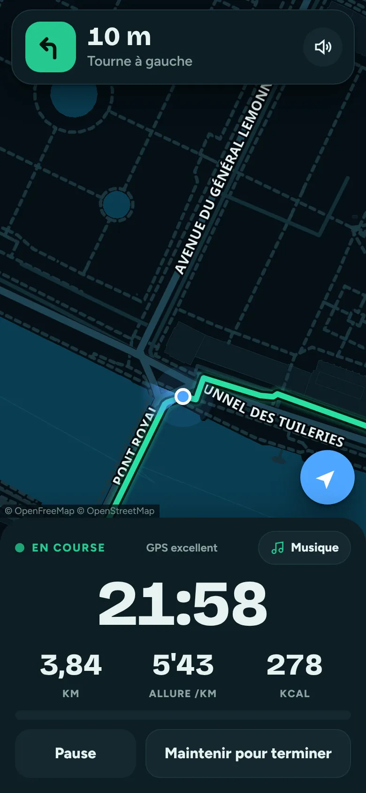

Marre de toujours courir au même endroit ?
Choisis ta distance : Traceo trace une boucle neuve qui part de chez toi et t'y ramène, loin des grands axes, avec guidage vocal.
1re boucle sans compte · iPhone et Android · sans téléchargement
Bêta gratuite en cours
Comment ça marche
Trois gestes, et tu cours.
Fini le même tour du quartier. Traceo se souvient des rues qu'il t'a déjà proposées et cherche toujours des rues nouvelles.
Localise-toi
Un geste, et Traceo connaît ton point de départ. Ou tape n'importe quelle adresse en France.
Choisis ta sortie
Une distance ou une durée, ton allure moyenne. Traceo compare plusieurs itinéraires et garde le plus inédit.
Laisse-toi guider
Le nom des rues s'affiche, les virages sont annoncés à la voix. Chrono, distance, allure et calories en direct.
Tout ce qu'il te faut
Pensé pour courir, pas pour pianoter.
Les vraies rues, avec leurs noms
Un plan clair et contrasté, pensé pour être lu en plein soleil : chaque rue est bien dessinée et porte son nom en gros, même sous ta boucle. Mode nuit en un geste.

Guidage vocal rue par rue
« Dans 100 mètres, tourne à droite sur la rue Vauban. » Le téléphone reste dans la poche.
Distance ou durée
5 km avant le boulot ou 45 minutes le dimanche : la boucle tombe juste, retour au point de départ.
Strava, Garmin et GPX
Envoie ta course sur Strava, ta boucle sur ta montre Garmin, ou exporte un GPX pour n'importe quelle montre.
Coach intégré
Nutrition, hydratation, programmes d'entraînement et routines d'échauffement, adaptés à ta sortie.
Une image qui claque
Ta boucle en néon sur la carte de ta ville, au format story Instagram. Prête à partager.
Nouveau · inclus dans Premium
Ne cours plus jamais seul.
Traceo, c'est aussi un coach IA dans ta poche et des coureurs autour de toi.
Ensemble
Crée ton profil de coureur et vois qui court près de chez toi. Touche « Je pars courir » : les coureurs à moins de 5 km reçoivent une notification. Invitations, messages, rendez-vous fixé en deux minutes.
- Position toujours arrondie, jamais ton adresse
- Mode invisible, blocage et signalement en un geste
Coach IA
Il connaît tes dernières sorties : séance du jour, bilan de la semaine, prédiction de chronos, plan 10 km ou marathon, nutrition. Tu lui parles ou tu lui écris, il trace la boucle qui va avec.
- « Qu'est-ce que je cours aujourd'hui ? »
- « Conseils pour cette boucle »
En images
Ta ville, comme tu ne l'as jamais courue.



Tarif
Un prix, tout compris.
Tracer des boucles est gratuit. Ta 1re course se fait sans compte, puis 3 courses offertes avec un compte gratuit, sans carte bancaire. Ensuite, moins cher qu'un gel énergétique par semaine. Et Traceo te récompense : un diamant de 5 € toutes les 100 courses.
4,99 € · 31 jours
Sans abonnement : tu paies une fois, rien ne se renouvelle.
Paiement sécurisé par PayPal, compte PayPal ou carte bancaire.
Offre de lancement
9,99 € · 3 mois
Au lieu de 14,97 € (3 × 4,99 €). Un seul paiement, sans abonnement. Jusqu'au dimanche 18 octobre à 23 h 59 (heure de Paris), au choix au moment de passer Premium dans l'app.
- Boucles illimitées, partout en France et en outre-mer
- Guidage vocal et nom des rues en direct
- Envoi sur Strava et sur ta montre Garmin
- Export GPX pour toutes les montres
- 🛡️ Boucles sûres : petites rues et chemins, à l'écart des départementales et nationales
- 💎 Un diamant de 5 € toutes les 100 courses : 31 jours de Premium offerts
- Ensemble : coureurs autour de toi, invitations et messages
- Coach IA : séance du jour, bilan, plans et réponses à tout
- Coach nutrition, hydratation et entraînement
- Image de ta boucle à partager
Un paiement = 31 jours de Premium (ou 3 mois avec l'offre de lancement). Sans abonnement, sans engagement : tu reprends quand tu veux. Conditions de vente
Sur ton téléphone
Pas besoin de store.
Traceo s'ouvre dans ton navigateur et s'installe sur ton écran d'accueil en 10 secondes, comme une vraie app.
iPhone
- Ouvre Traceo dans Safari.
- Touche Partager, le carré avec la flèche.
- Choisis « Sur l'écran d'accueil ».
Android
- Ouvre Traceo dans Chrome.
- Touche le menu ⋮ en haut à droite.
- Choisis « Installer l'application ».
Qui est derrière Traceo
Créé par Pierre, coureur, en France
Je cours, et j'en avais assez de refaire toujours les mêmes tours. J'ai créé Traceo pour que chaque sortie passe par des rues que je ne connaissais pas encore, et je l'améliore au fil de vos retours.
Une question, une idée, un souci ? Écris-moi à pierre.rnrd04@gmail.com, je lis chaque message.
Questions
Bon à savoir
Faut-il télécharger une application ?
Non. Traceo fonctionne directement dans le navigateur de ton téléphone. Tu peux l'ajouter à ton écran d'accueil pour l'ouvrir en un geste, en plein écran.
Ça marche dans ma ville ?
Partout en France, dans les grandes villes comme dans les villages, Corse, îles et outre-mer compris. Traceo s'appuie sur la Base Adresse Nationale et OpenStreetMap.
Comment Traceo évite-t-il les mêmes rues ?
Traceo garde en mémoire, sur ton téléphone, les rues qu'il t'a déjà proposées. Il compare plusieurs itinéraires et choisit celui qui passe par le plus de rues nouvelles.
Comment se passe le paiement ?
Par PayPal, avec ton compte PayPal ou une simple carte bancaire. 4,99 € débloquent 31 jours de Premium, sans abonnement : tu paies une fois, rien ne se renouvelle tout seul. Premium suit ton compte : connecte-toi sur un autre téléphone, il y est actif aussi.
Faut-il un compte ? Et mes données ?
Pas pour commencer : tracer des boucles est gratuit et ta 1re course se fait sans compte. Ensuite, un compte gratuit en 30 s (prénom, e-mail, mot de passe) t'offre 3 courses, sans carte bancaire. Ta position sert uniquement à dessiner ta boucle et à te guider. Tes boucles restent enregistrées sur ton téléphone.
Il faut du réseau pendant la course ?
Oui, une connexion mobile est conseillée : Traceo calcule la boucle et affiche la carte en ligne. Le suivi de ta course, lui, utilise le GPS du téléphone.
Ta prochaine boucle
t'attend dehors.
Lace tes chaussures, Traceo s'occupe du reste.
Tracer ma boucle gratuite1re boucle sans compte · iPhone et Android · sans téléchargement